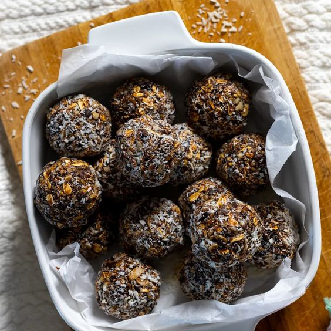

Energy Balls

Recipe
These energy date balls are a perfect, no-bake snack that's both delicious and nutritious. Made with naturally sweet dates, nuts, and seeds, these bite-sized treats are packed with energy-boosting ingredients to keep you fueled throughout the day. They're also gluten-free, dairy-free, and refined sugar-free, making them an excellent option for a healthy snack. Simply blend the ingredients, roll them into balls, and you have a portable, satisfying snack that’s great for on-the-go or as a quick pick-me-up. Customize them with your favorite mix-ins like shredded coconut, cacao nibs, or dried fruit for a personalized touch.
Ingredients
- 1 cup pitted dates (Medjool dates work best)
- 1/2 cup raw almonds (or any nut of choice)
- 1/4 cup unsweetened shredded coconut
- 2 tablespoons chia seeds
- 1/2 teaspoon vanilla extract
- 2 tablespoons cacao powder (optional for a chocolatey flavor)
- 1 tablespoon coconut oil (optional for added moisture)
- Pinch of sea salt
- Optional mix-ins: cacao nibs, dried fruit, or additional nuts/seeds
Steps
-
In a food processor, add the pitted dates, nuts, shredded coconut, chia seeds, cacao powder (if using), vanilla extract, and a pinch of sea salt.
-
Blend until the mixture is finely ground and starts to clump together. If the mixture is too dry, add coconut oil to help bind it.
-
Once the mixture is well combined and sticky, scoop out small portions and roll them into bite-sized balls with your hands.
-
If desired, roll the balls in extra shredded coconut, cacao nibs, or other toppings of your choice.
-
Place the energy balls on a tray or plate and refrigerate them for at least 20 minutes to firm up.
-
Once firm, transfer the energy balls to an airtight container. They can be stored in the fridge for up to two weeks or in the freezer for longer.